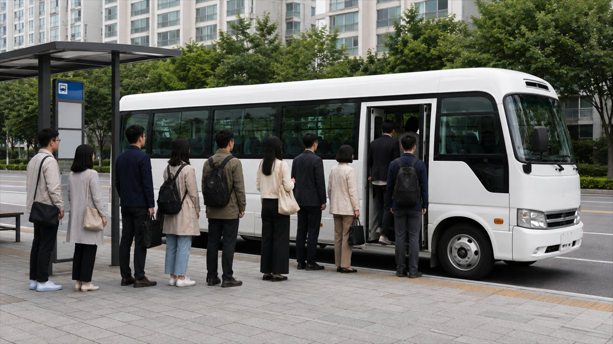
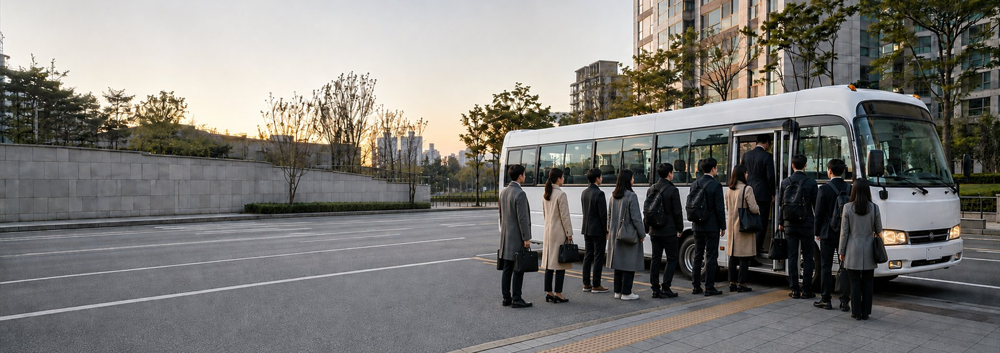
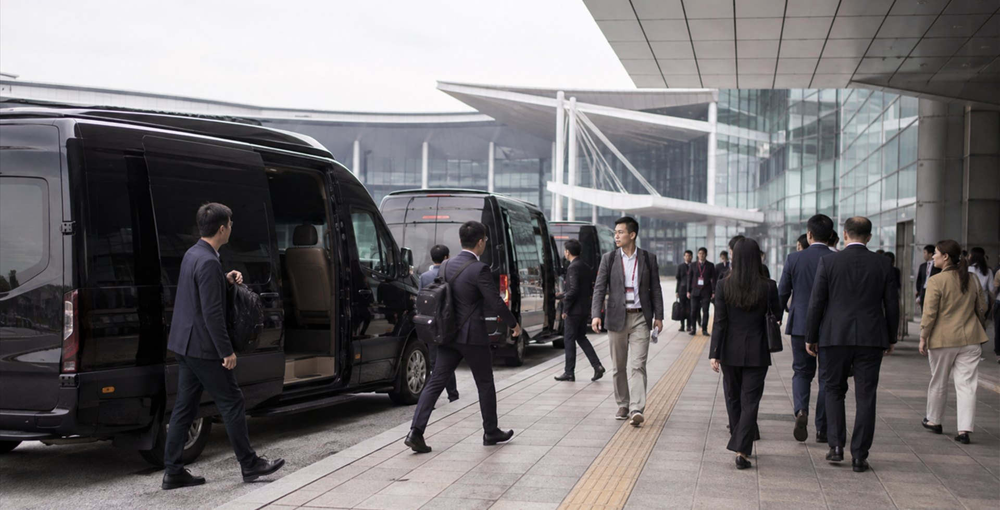
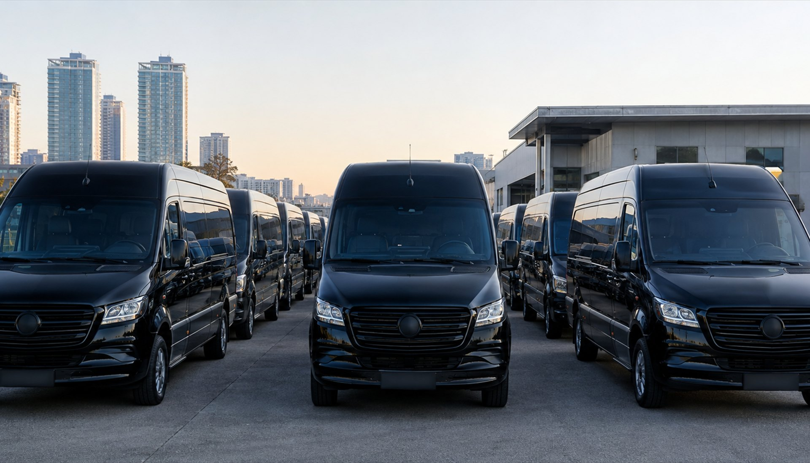
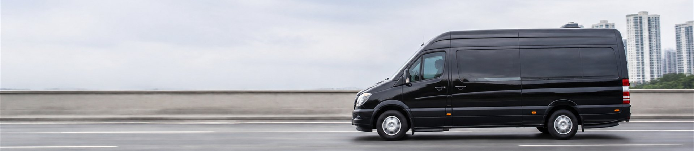

01
생활형 셔틀 · 정기 노선
아파트 셔틀, 출퇴근 셔틀, 호텔과 공항을 잇는 연계 노선처럼 이동이 매일 반복되는 거점을 연결합니다. 필요로 하는 거점 사이에 주요 노선을 확보해 정해진 시간표대로 운행하고, 탑승자 확인과 운행 기록 관리까지 노선 운영에 필요한 일을 함께 맡습니다. 쌓인 이용 데이터는 노선을 함께 다듬는 근거가 됩니다.

위즈모빌리티는 이동 수요가 반복되는 거점을 먼저 확인하고, 그 거점을 연결하는 노선을 설계해 셔틀을 운영합니다.
일상적으로 운행하는 생활형 셔틀과 행사 기간에 운행하는 행사 셔틀, 두 가지 방식이 있습니다.

아파트 셔틀, 출퇴근 셔틀, 호텔과 공항을 잇는 연계 노선처럼 이동이 매일 반복되는 거점을 연결합니다. 필요로 하는 거점 사이에 주요 노선을 확보해 정해진 시간표대로 운행하고, 탑승자 확인과 운행 기록 관리까지 노선 운영에 필요한 일을 함께 맡습니다. 쌓인 이용 데이터는 노선을 함께 다듬는 근거가 됩니다.

국제회의, 전시회, 컨벤션 같은 MICE 행사에 필요한 셔틀 노선을 만들고 운영합니다. 공항과 지정 호텔, 행사장을 잇는 참가자 수송부터 만찬과 기업 방문 같은 부대행사 이동까지 행사 규모와 일정에 맞춰 노선을 설계합니다. 참가자가 행사에서 처음 만나는 접점이 셔틀이기에, 현장 운영까지 한 팀이 책임집니다.
출퇴근과 등하교, 고객 송영처럼 반복되는 이동은 건별 배차보다 정기 노선이 효율적입니다. 수요가 모이는 거점을 연결하는 주요 노선을 확보하고 시간표대로 운행합니다.
아파트 단지와 지하철역, 학교, 상업 시설을 연결해 입주민의 이동을 돕습니다.
사업장과 주거 밀집 지역, 주요 역을 연결해 출퇴근 시간을 줄입니다.
호텔과 공항, 역, 주요 관광지를 연결해 투숙객의 이동을 돕습니다.
공항, KTX역, 사업장, 기숙사처럼 수요가 모이는 거점 사이를 정기 운행합니다.
· 이용 대상이 정해진 노선은 탑승자 확인 절차를 함께 설계합니다.
MICE 행사에서 셔틀은 참가자가 행사를 만나는 첫 접점입니다. 등록 인원과 세션 일정에 맞춰 노선과 배차를 설계하고, 행사 기간 내내 현장에서 운영합니다.
참가자의 도착과 출발이 몰리는 날에 공항과 역을 연결합니다.
지정 호텔과 행사장 사이를 정해진 배차 간격으로 순환합니다.
본행사 밖의 일정에 맞춰 별도 노선을 편성합니다.
· 30명 이상 행사에는 현장 운영 매니저가 함께합니다. 연사와 VIP의 개별 이동까지 필요한 행사라면 단체 수송(Group Transportation)과 하나의 운영 건으로 묶어 진행할 수 있습니다.
정해진 양식은 필요 없습니다. 출발지와 도착지만 있어도 상담을 시작할 수 있고, 아래 네 가지를 함께 정리하면 노선안이 나옵니다.
출발지와 도착지, 중간에 서야 할 곳을 확인합니다.
이동이 몰리는 시간대와 운행 횟수를 정리합니다.
시간대별 이용 인원에 맞는 차량 크기와 대수를 정합니다.
누가 타는 노선인지, 탑승 확인은 어떻게 할지 정합니다.
자체적으로 운영하는 과정에서 겪는 어려움을 위즈모빌리티가 해결해 드립니다.
이용 인원과 시간대를 조사해 노선과 시간표를 설계합니다.
이용 인원에 맞춰 승합과 대형 승합을 편성합니다.
확정된 시간표대로 차량을 배차하고 운행을 준비합니다.
탑승 대상을 확인하고 정해진 인원만 이용하도록 관리합니다.
차량 위치와 운행 상태를 한 화면에서 확인합니다.
노선별 이용 기록과 정산 내역을 하나의 명세로 정리합니다.

수요는 아침과 저녁, 행사 전후에 몰리는데 차량과 기사는 하루 종일 유지해야 합니다. 그 부담을 위즈모빌리티가 대신 맡습니다.
수요가 몰리는 시간을 기준으로 차량을 보유하면 나머지 시간은 비용으로 남습니다. 위즈모빌리티는 필요한 시간에 필요한 만큼만 운영합니다.
셔틀은 시내버스와 달리 탈 수 있는 사람이 정해져 있습니다. 탑승자 확인 절차를 노선 운영에 포함해 관리합니다.
기사 채용과 근태, 정비와 보험까지 챙길 일이 이어집니다. 검증된 기사와 차량으로 운행하고 결원은 대체 배차로 메웁니다.
배차표와 운행 기록을 수기로 챙길 필요가 없습니다. 시스템으로 운행을 관리하고 명세와 리포트로 정리해 전달합니다.
셔틀 운영을 검토할 때 가장 많이 받는 질문을 모았습니다.
